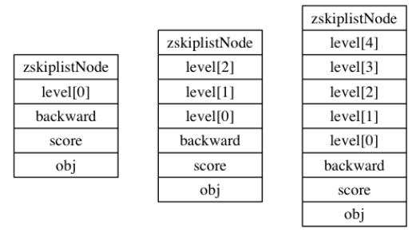

详解Redis数据结构之跳跃表
1、简介
我们先不谈Redis，来看一下跳表。
1.1、业务场景
场景来自小灰的算法之旅，我们需要做一个拍卖行系统，用来查阅和出售游戏中的道具，类似于魔兽世界中的拍卖行那样，还有以下需求：
拍卖行拍卖的商品需要支持四种排序方式，分别是：按价格、按等级、按剩余时间、按出售者ID排序，排序查询要尽可能地快。还要支持输入道具名称的精确查询和不输入名称的全量查询。
这样的业务场景所需要的数据结构该如何设计呢？拍卖行商品列表是线性的，最容易表达线性结构的是数组和链表。假如用有序数组，虽然查找的时候可以使用二分法（时间复杂度O(logN)），但是插入的时间复杂度是O(N)，总体时间复杂度是O(N)；而如果要使用有序链表，虽然插入的时间复杂度是O(1)，但是查找的时间复杂度是O(N)，总体还是O(N)。
那有没有一种数据结构，查找时，有二分法的效率，插入时有链表的简单呢？有的，就是 跳表。
1.2、skiplist
skiplist，即跳表，又称跳跃表，也是一种数据结构，用于解决算法问题中的查找问题。
一般问题中的查找分为两大类，一种是基于各种平衡术，时间复杂度为O(logN)，一种是基于哈希表，时间复杂度O(1)。但是skiplist比较特殊，没有在这里面
2、跳表
2.1、跳表简介
跳表也是链表的一种，是在链表的基础上发展出来的，我们都知道，链表的插入和删除只需要改动指针就行了，时间复杂度是O(1)，但是插入和删除必然伴随着查找，而查找需要从头/尾遍历，时间复杂度为O(N)，如下图所示是一个有序链表（最左侧的灰色表示一个空的头节点）（图片来自网络，以下同）：
链表中，每个节点都指向下一个节点，想要访问下下个节点，必然要经过下个节点，即无法跳过节点访问，假设，现在要查找22，我们要先后查找 3->7->11->19->22，需要五次查找。
但是如果我们能够实现跳过一些节点访问，就可以提高查找效率了，所以对链表进行一些修改，如下图：
我们每个一个节点，都会保存指向下下个节点的指针，这样我们就能跳过某个节点进行访问，这样，我们其实是构造了两个链表，新的链表之后原来链表的一半。
我们姑且称原链表为第一层，新链表为第二层，第二层是在第一层的基础上隔一个取一个。假设，现在还是要查找22，我们先从第二层查找，从7开始，7小于22，再往后，19小于22，再往后，26大于22，所以从节点19转到第一层，找到了22，先后查找 7->19->26->22，只需要四次查找。
以此类推，如果再提取一层链表，查找效率岂不是更高，如下图：
现在，又多了第三层链表，第三层是在第二层的基础上隔一个取一个，假设现在还是要查找22，我们先从第三层开始查找，从19开始，19小于22，再往后，发现是空的，则转到第二层，19后面的26大于22，转到第一层，19后面的就是22，先后查找 19->26>22，只需要三次查找。
由上例可见，在查找时，跳过多个节点，可以大大提高查找效率，skiplist 就是基于此原理。
上面的例子中，每一层的节点个数都是下一层的一半，这种查找的过程有点类似二分法，查找的时间复杂度是O(logN)，但是例子中的多层链表有一个致命的缺陷，就是一旦有节点插入或者删除，就会破坏这种上下层链表节点个数是2:1的结构，如果想要继续维持，则需要在插入或者删除节点之后，对后面的所有节点进行一次重新调整，这样一来，插入/删除的时间复杂度就变成了O(N)。
2.2、跳表层级之间的关系
如上所述，跳表为了解决插入和删除节点时造成的后续节点重新调整的问题，引入了随机层数的做法。相邻层数之间的节点个数不再是严格的2:1的结构，而是为每个新插入的节点赋予一个随机的层数。下图展示了如何通过一步步的插入操作从而形成一个跳表：
每一个节点的层数都是随机算法得出的，插入一个新的节点不会影响其他节点的层数，因此，插入操作只需要修改插入节点前后的指针即可，避免了对后续节点的重新调整。这是跳表的一个很重要的特性，也是跳表性能明显由于平衡树的原因，因为平衡树在失去平衡之后也需要进行平衡调整。
上图最后的跳表中，我们需要查找节点22，则遍历到的节点依次是：7->37->19->22，可见，这种随机层数的跳表的查找时可能没有2:1结构的效率，但是却解决了插入/删除节点的问题。
2.3、跳表的复杂度
跳表搜索的时间复杂度平均 O(logN)，最坏O(N)，空间复杂度O(2N)，即O(N)
3、Redis中的跳表
在理解 Redis 的跳跃表之前，我们先回忆一下 Redis 的有序集合（sorted set）操作
- 不重复但有序的字符串元素集合；
- 每个元素均关联一个double类型的score，Redis 根据score进行从小到大排序；
- score可以重复，重复的按照插入顺序进行排序；
示例如下：
1 2 3 4 5 6 7 8 9 10 11 12 13 14 15 16 17 18 | redis 127.0.0.1:6379> ZADD runoobkey 1 redis(integer) 1redis 127.0.0.1:6379> ZADD runoobkey 2 mongodb(integer) 1redis 127.0.0.1:6379> ZADD runoobkey 3 mysql(integer) 1redis 127.0.0.1:6379> ZADD runoobkey 3 mysql(integer) 0redis 127.0.0.1:6379> ZADD runoobkey 4 mysql(integer) 0redis 127.0.0.1:6379> ZRANGE runoobkey 0 10 WITHSCORES"redis""1""mongodb""2""mysql""4" |
这个是 Redis 中的有序列表的基本操作，我们答题可以看出，在有序列表中，有一个浮点数作为 score， 当对应一个值，可以根据 score 精确查找和范围查找，且效率很高
Redis 里面的这种操作的底层实现就是跳表。
上面理解了跳表，再去看 Redis 中的跳表就轻松多了，跳表的实现在 Redis 源码目录下 redis.h 文件中
3.1、zskiplistNode
zskiplistNode 表示跳表的一个节点，声明如下：
1 2 3 4 5 6 7 8 9 | typedef struct zskiplistNode { robj *obj; double score; struct zskiplistNode *backward; struct zskiplistLevel { struct zskiplistNode *forward; unsigned int span; } level[];} zskiplistNode; |
robj 类型是 Redis 中用C语言实现一种集合数据结构，它可以表示 string、hash、list、set 和 zset 五种数据类型，这里不做详细说明，在跳表节点中，这个类型的指针表示节点的成员对象
score 表示分值，用于排序和范围查找
level 是一个柔性数组，它表示节点的层级，每层都有一个前进指针 forward，用于指向相同层级指向表尾方向的下一个节点，而 span 则表示当前节点在当前层级中距离下一个节点的跨度，即两个节点之间的距离。
初看上去，很容易以为跨度和遍历节点有关，实际并不是，遍历操作只用前进指针就够了，跨度是用来计算排位（rank）的：在查找某个节点的过程中，沿途访问过的所有层的跨度累计起来，就是目标节点在跳表中的排位。
下图中，查找成员o3，只经历了一层，排位为3
在 Redis 中，每个节点的层级都是根据幂次定律（power law，越大的树出现的概率越小）随机生成的，它是1~32之间的一个数，作为level数组的大小，即高度
下图分别展示了三个高度为1、3、5层的节点

backward 是一个后退指针，每个节点都有一个，指向当前节点的表头方向的下一个节点，用于从表尾进行遍历
3.2、zskiplist
zskiplist 表示一个跳表，声明如下：
1 2 3 4 5 | typedef struct zskiplist { struct zskiplistNode *header, *tail; unsigned long length; int level;} zskiplist; |
header 和 tail 指针分别指向表头和表尾节点
length 记录了节点数量
level 记录了所有节点中层级最高的节点的层级，表头节点的层高不计算在内
下图是一个跳表的示例，最左侧是一个 zskiplist 结构，其右侧是四个 zskiplistNode 节点，从左向右分别有32层、4层、2层、5层。每个节点向右的指针即前进指针 forward， BW 则表示后退指针 backward，每个节点依据节点的分值 score 进行排列
到此这篇关于Redis数据结构中的跳跃表的文章就介绍到这了,更多相关Redis数据结构跳跃表内容请搜索脚本之家以前的文章或继续浏览下面的相关文章希望大家以后多多支持脚本之家！

微信公众号搜索 “ 脚本之家 ” ，选择关注
程序猿的那些事、送书等活动等着你
本文来自互联网用户投稿，该文观点仅代表作者本人，不代表本站立场。本站仅提供信息存储空间服务，不拥有所有权，不承担相关法律责任。
如若内容造成侵权/违法违规/事实不符，请将相关资料发送至 reterry123@163.com 进行投诉反馈，一经查实，立即处理！
相关文章
redis的hGetAll函数的性能问题(记Redis那坑人的HGETALL)
这篇文章主要介绍了redis的hGetAll函数的性能问题,需要的朋友可以参考下2016-02-02 redis缓存固然高效,可是它会占用我们系统中宝贵的内存资源，那该如何解决呢？这篇文章主要给大家介绍了关于redis内存空间效率问题的相关资料，需要的朋友可以参考下2021-05-05
redis缓存固然高效,可是它会占用我们系统中宝贵的内存资源，那该如何解决呢？这篇文章主要给大家介绍了关于redis内存空间效率问题的相关资料，需要的朋友可以参考下2021-05-05 本文主要介绍了redis使用zset实现延时队列的示例代码，文中通过示例代码介绍的非常详细，对大家的学习或者工作具有一定的参考学习价值，需要的朋友们下面随着小编来一起学习学习吧2023-06-06
本文主要介绍了redis使用zset实现延时队列的示例代码，文中通过示例代码介绍的非常详细，对大家的学习或者工作具有一定的参考学习价值，需要的朋友们下面随着小编来一起学习学习吧2023-06-06 大家好，本篇文章主要讲的是linux下安装redis图文详细步骤，感兴趣的同学赶快来看一看吧，对你有帮助的话记得收藏一下，方便下次浏览2021-12-12
大家好，本篇文章主要讲的是linux下安装redis图文详细步骤，感兴趣的同学赶快来看一看吧，对你有帮助的话记得收藏一下，方便下次浏览2021-12-12
Spring Boot 整合Redis 实现优惠卷秒杀 一人一单功能
这篇文章主要介绍了Spring Boot 整合Redis 实现优惠卷秒杀 一人一单,在分布式系统下，高并发的场景下，会出现此类库存超卖问题，本篇文章介绍了采用乐观锁来解决，需要的朋友可以参考下2022-09-09 本文主要介绍了redis监听key过期事件的详细步骤，文中通过示例代码介绍的非常详细，对大家的学习或者工作具有一定的参考学习价值，需要的朋友们下面随着小编来一起学习学习吧2022-08-08
本文主要介绍了redis监听key过期事件的详细步骤，文中通过示例代码介绍的非常详细，对大家的学习或者工作具有一定的参考学习价值，需要的朋友们下面随着小编来一起学习学习吧2022-08-08 在单体应用中，如果我们对共享数据不进行加锁操作，会出现数据一致性问题，我们的解决办法通常是加锁。下面我们一起聊聊使用redis来实现分布式锁2022-07-07
在单体应用中，如果我们对共享数据不进行加锁操作，会出现数据一致性问题，我们的解决办法通常是加锁。下面我们一起聊聊使用redis来实现分布式锁2022-07-07 本文主要介绍了Redis实现事物以及锁的方法，文中通过示例代码介绍的非常详细，对大家的学习或者工作具有一定的参考学习价值，需要的朋友们下面随着小编来一起学习学习吧2022-07-07
本文主要介绍了Redis实现事物以及锁的方法，文中通过示例代码介绍的非常详细，对大家的学习或者工作具有一定的参考学习价值，需要的朋友们下面随着小编来一起学习学习吧2022-07-07 Redis 集群提供了灵活的节点扩容和收缩方案。在不影响集群对外服务的情况下，可以为集群添加节点进行扩容，也可以下线部分节点进行缩容，接下来通过本文给大家分享Redis 集群伸缩原理，感兴趣的朋友一起看看吧2021-05-05
Redis 集群提供了灵活的节点扩容和收缩方案。在不影响集群对外服务的情况下，可以为集群添加节点进行扩容，也可以下线部分节点进行缩容，接下来通过本文给大家分享Redis 集群伸缩原理，感兴趣的朋友一起看看吧2021-05-05


最新评论